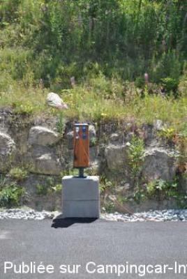
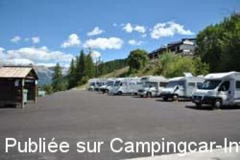
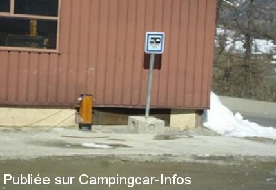
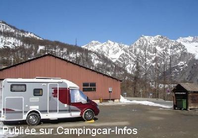

ASN = Aire de services avec stationnement nuit possible de :
PUY SAINT VINCENT
(N° 114)
Accès/adresse :
Clôt du Rouzel
Station de ski Puy Saint Vincent 1600
05290 PUY SAINT VINCENT
Station de ski Puy Saint Vincent 1600
05290 PUY SAINT VINCENT
Latitude : (Nord) 44.81981° Décimaux ou 44° 49′ 11′′
Longitude : (Est) 6.48641° Décimaux ou 6° 29′ 11′′
Tarif : 2014
Stationnement, services : 6 €
Type de borne : Artisanale
Services :


Autres informations :
Ouvert de mi-décembre à fin avril
20 emplacements
Stationnement limité 2 semaines
10 prises électriques
Tel : +33(0)492 235 177
puy.saint.vincent@wanadoo.fr
http://ski.puysaintvincent.com/Accueil/Page_60_38_FR.html

Le 23/08/2010 par José

Le 23/08/2010 par José

Le 31/03/2008 par Robert

Le 31/03/2008 par Robert
de
clau
le 17/08/2013 :
Passé 3 nuits fin juillet 2013. Electricité avec 10A. A l'entrée de la station. Télésiège en service l'été pour des randos en altitude.
Passé 3 nuits fin juillet 2013. Electricité avec 10A. A l'entrée de la station. Télésiège en service l'été pour des randos en altitude.
de
Christophe & sa tribu
le 28/02/2013 :
De passage le 24 février 2013.
Nous étions 3 CC, en ce week-end de vacances scolaires.
Eau courante accessible même par -15°C par un très ingénieux système. 10 prises électriques, réparties sur 3 bornes délivrent chacune 10A.
Paiement auprès des gardes municipaux (très souples et sympathiques), au bureau des ASVP au dessus de l'aire, à la station.
Je recommande la rando en raquettes, à faire en famille, dans le vallon de Narreyroux.
De passage le 24 février 2013.
Nous étions 3 CC, en ce week-end de vacances scolaires.
Eau courante accessible même par -15°C par un très ingénieux système. 10 prises électriques, réparties sur 3 bornes délivrent chacune 10A.
Paiement auprès des gardes municipaux (très souples et sympathiques), au bureau des ASVP au dessus de l'aire, à la station.
Je recommande la rando en raquettes, à faire en famille, dans le vallon de Narreyroux.
de
José
le 23/08/2010 :
Bonjour. De passage le 08/08, aire agréable, propre, totalement goudronnée, calme, vue 3***. L'aire est désormais payante, 6€ avec les services électricité compris, bornes sur la plate-forme de vidanges ainsi que vers les emplacements. D'après les indications, le paiement s'effectue aux horodateurs, mais ils étaient tous bâchés, d'après l'office du tourisme, un employé passe régulièrement prélever le règlement. Commerces, piscine, luge d'été à 2 mm à pied. Belles balades sur place, et la vallée de VALLOUISE à proximité. MERCI à la commune. §
Bonjour. De passage le 08/08, aire agréable, propre, totalement goudronnée, calme, vue 3***. L'aire est désormais payante, 6€ avec les services électricité compris, bornes sur la plate-forme de vidanges ainsi que vers les emplacements. D'après les indications, le paiement s'effectue aux horodateurs, mais ils étaient tous bâchés, d'après l'office du tourisme, un employé passe régulièrement prélever le règlement. Commerces, piscine, luge d'été à 2 mm à pied. Belles balades sur place, et la vallée de VALLOUISE à proximité. MERCI à la commune. §
de
José
le 23/08/2010 :
Bonjour. Petite précision, l'aire se trouve à "PUY St VINCENT 1600", ne pas aller à 1400, sinon demi-tour, à l'entrée du village à droite. §
Bonjour. Petite précision, l'aire se trouve à "PUY St VINCENT 1600", ne pas aller à 1400, sinon demi-tour, à l'entrée du village à droite. §
de
rn
le 21/08/2010 :
Nous avons passé deux nuits sur cette aire très calme, très beau point de vue, très bien reçu par les commercants. Merci à la municipalité.
Nous avons passé deux nuits sur cette aire très calme, très beau point de vue, très bien reçu par les commercants. Merci à la municipalité.
de
ssrw.38
le 15/07/2009 :
Aire en état (eau, électricité 2 prises, vidange) stationnement pour une bonne dizaine de CC. En espérant que cette aire continue d'exister. §
Aire en état (eau, électricité 2 prises, vidange) stationnement pour une bonne dizaine de CC. En espérant que cette aire continue d'exister. §
de
Robert
le 31/03/2008 :
Dernier week-end de Mars. L'aire fonctionne parfaitement et elle est très peu fréquentée. Le seul problème, est que le terrain n'est pas goudronné donc très boueux lors de la fonte de la neige.
Dernier week-end de Mars. L'aire fonctionne parfaitement et elle est très peu fréquentée. Le seul problème, est que le terrain n'est pas goudronné donc très boueux lors de la fonte de la neige.
de
Doudou chant 13
le 30/12/2007 :
Il n'y a pas d'eau et à première vue, plus d'autorisation pour aller en chercher chez IGESA, il y a 2 prises électriques et plusieurs camping-cars sont branchés dessus, le parking est autorisé à tous les véhicules, donc il y a beaucoup de voitures qui sont stationnées. Par contre, il a été fait une aire de vidanges parfaite, le problème c'est que les véhicules poussent la barrière en bois pour se garer dessus, donc pas de possibilité de vidanger.
Il n'y a pas d'eau et à première vue, plus d'autorisation pour aller en chercher chez IGESA, il y a 2 prises électriques et plusieurs camping-cars sont branchés dessus, le parking est autorisé à tous les véhicules, donc il y a beaucoup de voitures qui sont stationnées. Par contre, il a été fait une aire de vidanges parfaite, le problème c'est que les véhicules poussent la barrière en bois pour se garer dessus, donc pas de possibilité de vidanger.
de
ssrw.38
le 25/08/2006 :
L'été, services gratuits au camping municipal entre 14h et 16h.
L'été, services gratuits au camping municipal entre 14h et 16h.
de
Doudou-Chant
le 09/04/2006 :
Sommes allés le week end fin mars, toujours pas d'eau, à première vue il faudrait qu'ils effectuent des travaux, déjà l'année dernière nous pouvions aller chercher l'eau chez IGESA en accord avec le Directeur de la Station.
Sommes allés le week end fin mars, toujours pas d'eau, à première vue il faudrait qu'ils effectuent des travaux, déjà l'année dernière nous pouvions aller chercher l'eau chez IGESA en accord avec le Directeur de la Station.